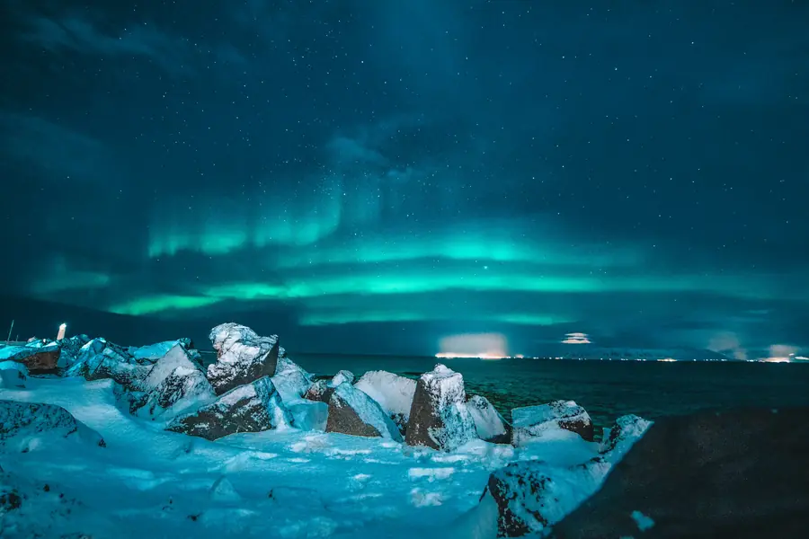
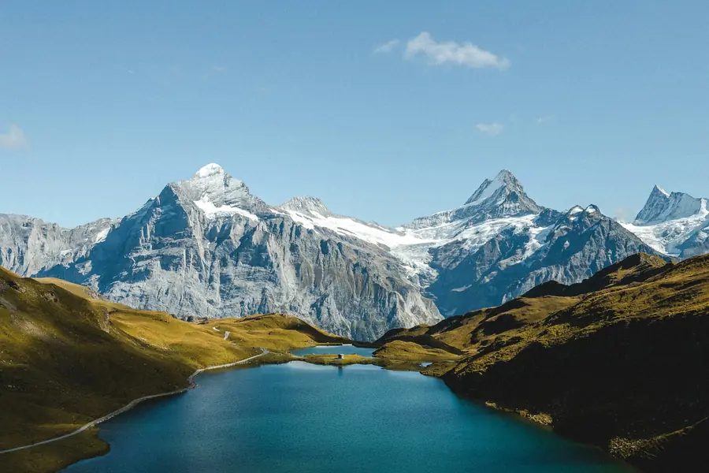
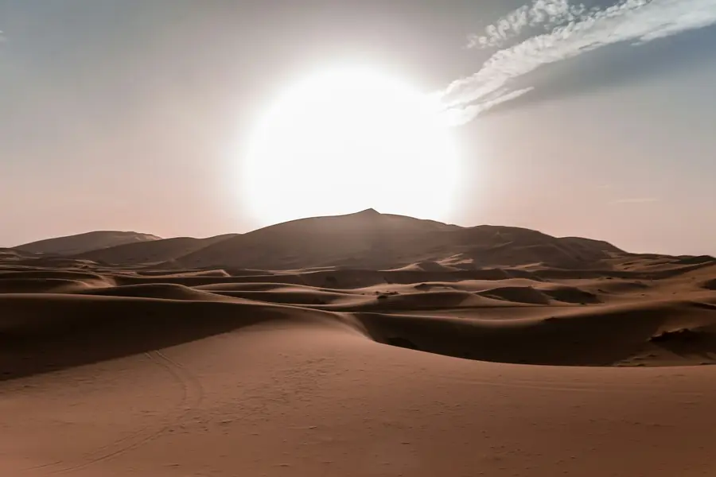

Drammatico
Bordo elettrico
Quando una cosa deve emergere, e deve farlo con una certa teatralità.
Tre modi di dare vita a un bordo: un gradiente che gira con l’alone, una scarica elettrica e un
tratto di pennarello che corre sul contorno. Sono animazioni continue: si fermano quando escono
dallo schermo e con prefers-reduced-motion.



Drammatico
Quando una cosa deve emergere, e deve farlo con una certa teatralità.
Il contorno non è un rettangolo: è una linea imperfetta che si ripete come tratto di pennarello.
Stesso gesto, colore neutro e un tratto più corto: si nota meno, si perdona di più.
Una pausa minuscola nel giro: basta a far capire che qualcosa si muove.
L’alone del primo gruppo è un filtro SVG applicato alla foto: è bello ma costa, per questo ne basta uno per scheda e l’animazione parte solo quando la sezione è visibile. Foto: Unsplash.